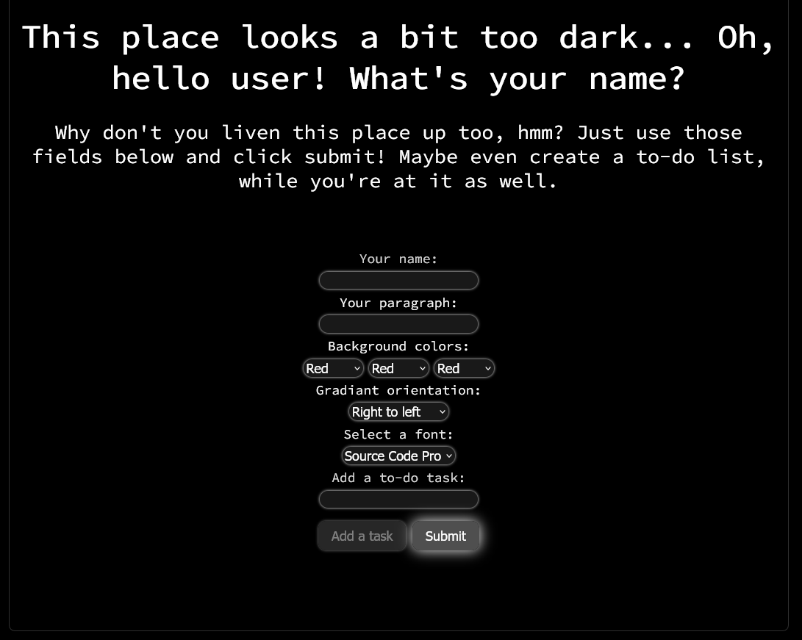
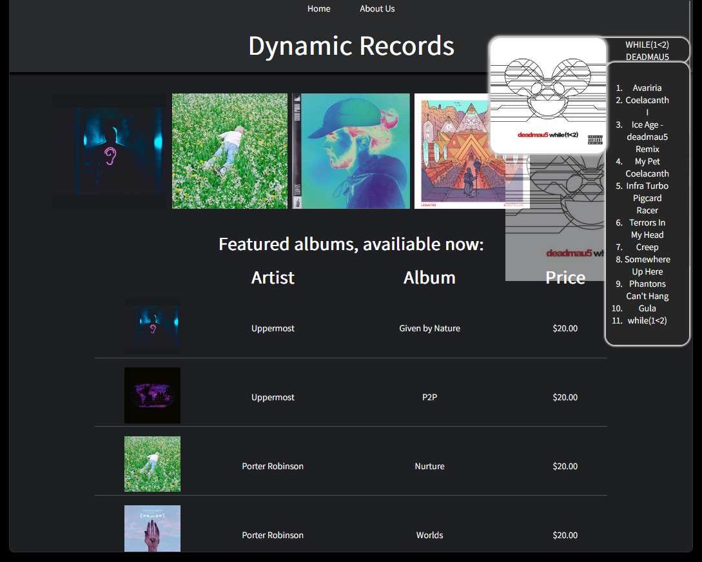
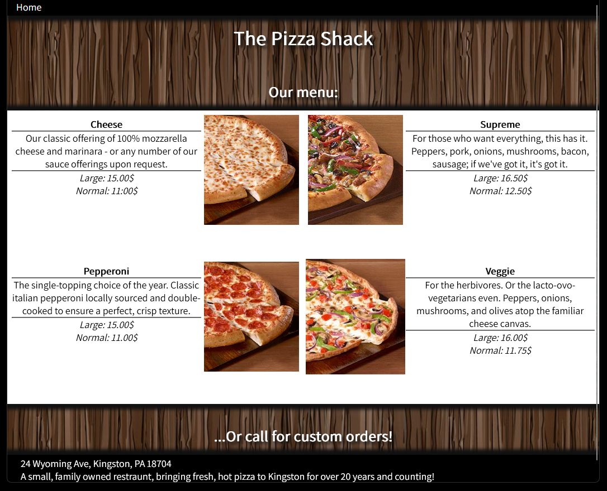

This website application allows users to create a simple to do list.
Additional features include font, background, name/title, and paragraph customization to accompany the list.
Users are able to add as many tasks to the list as they like with the web page updating with a new task each
time the submit button is clicked.

This website is meant to be an illustration of a website providing a local store a presence to advertise
available products in their store. At the top of the page are highlighted albums that when hovered over
display more detailed information about the album itself that follows the user's pointer until it leaves
the album cover.

This webpage serves as a simple menu for customers to view at any time. The corresponding images to
each menu item can be clicked to display a larger version of the image with more descriptive text.
The page is styled in CSS to ensure content is legible both on large desktop screens and small mobile
devices.
